Reconversión de Cultivos en Sonora
Este proyecto, desarrollado por el equipo de Reconversión de Cultivos de la carrera de Ciencias de la Computación de la Universidad de Sonora, tiene como objetivo proponer alternativas viables de reconversión de cultivos para optimizar el uso de los recursos hídricos y aumentar la rentabilidad agrícola en Sonora.
Análisis y cálculo de evapotranspiración del cultivo (ETc) y la huella hídrica (HH) del cultivo bajo el estándar internacional FAO-56.
Evaluación multicultivo analizando rentabilidad económica física (MXN/m³) frente a consumos de agua para proponer alternativas de menor huella.
Infraestructura en Python implementando OOP y Pydantic, garantizando robustez para modelado de machine learning y analítica.
Metodología del Proyecto
El flujo del proyecto se divide en cuatro fases principales consecutivas:
- Fase 1: Exploración y Diagnóstico: Inmersión y recopilación de datos oficiales (SIAP, CONAGUA, NASA POWER).
- Fase 2: Análisis de Rentabilidad: Evaluación económica y determinación de precios y rentabilidad en mercado.
- Fase 3: Análisis Técnico y Viabilidad: Modelado del cálculo de Huella Hídrica y optimización física.
- Fase 4: Propuesta Sistémica: Recomendaciones del modelo para reconversión agrícola en Sonora.

Metodología de Evapotranspiración y Huella Hídrica
Base matemática del modelo, compilada dinámicamente desde el reporte oficial FAO-56 del proyecto.
Calculadora Interactiva de Huella Hídrica (FAO-56)
Utiliza esta herramienta para simular y calcular el consumo hídrico y la Huella Hídrica (HH Verde y Azul) de un cultivo en base a parámetros diarios promedio.
Parámetros de Entrada
Resultados de Simulación (Estimados)
Diagnóstico Hídrico y Riesgo por Sequía en Sonora
Monitoreo y evaluación espacial del estrés hídrico a tres niveles territoriales (Estatal, DDR y Municipal) combinando datos históricos del Monitor de Sequía de la CONAGUA con mapas de calor.
Porcentaje del tiempo que Sonora ha estado bajo condiciones de sequía de moderada a excepcional (D1-D4) desde 2003.
El municipio de -- registra el mayor déficit climatológico acumulado anual.
Fracción de agua azul (riego de presas/pozos) promedio requerida para la evapotranspiración de los cultivos en Sonora.
1. Evolución Temporal de la Sequía en Sonora (2003-2026)
Para proponer una reconversión productiva efectiva y sustentable en el estado, primero es crucial evaluar el comportamiento histórico de largo plazo de la escasez de agua. Este análisis retrospectivo de área apilada clasifica la porción del territorio municipal sonorense afectado por diferentes niveles de severidad de sequía en las últimas dos décadas.
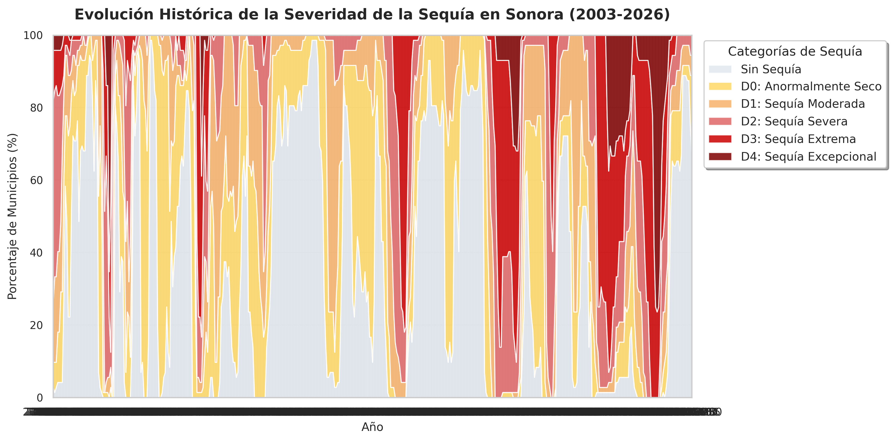
La gráfica revela una condición crónica y estructural: Sonora experimenta sequías recurrentes con picos devastadores en 2011-2012, 2020-2021 y un repunte alarmante que inició en 2023 y continúa hacia 2026, donde casi el 90% del territorio agrícola ha estado bajo alguna categoría de sequía. La persistente presencia de sequía Extrema (D3) y Excepcional (D4) justifica que no se puede planificar la agricultura estatal basada en años "promedio", y que sostener cultivos perennes de ciclo largo (como alfalfa o nogal) expone a los productores a pérdidas catastróficas debido al inminente colapso en la disponibilidad de agua en las fuentes de abasto.
2. Tendencia de Precipitación y Temperatura Promedio (2010-2023)
Este análisis de tendencia evalúa de manera conjunta la precipitación pluvial acumulada anual y la temperatura media promedio registrada durante los ciclos agrícolas, permitiendo identificar si el déficit de agua se ve agravado por factores térmicos.
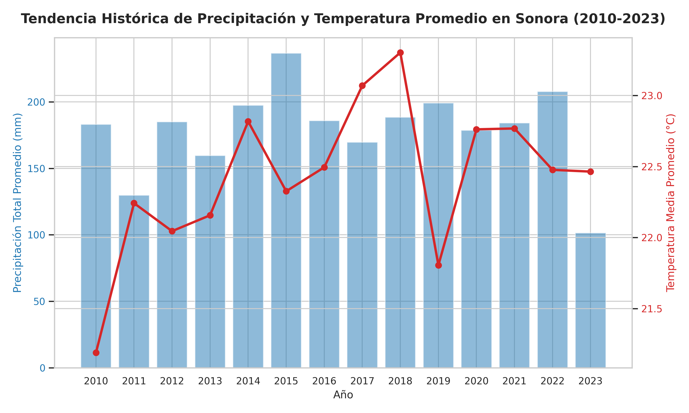
Se observa una tendencia de precipitación media anual a la baja, con una alta variabilidad interanual típica del desierto, acompañada de un incremento sostenido en la temperatura media. Este patrón de calentamiento incrementa de forma directa la evapotranspiración de referencia (\(ET_o\)), lo que significa que los cultivos demandan hoy más agua simplemente para sobrevivir y transpirar de la que necesitaban hace una década. Esta creciente brecha entre la oferta de lluvia que disminuye y el consumo fisiológico que aumenta hace imperativo reconvertir la producción hacia cultivos eficientes.
3. Eficiencia de la Lluvia: Precipitación Total vs. Precipitación Efectiva
Representa la fracción del volumen de lluvia acumulada que logra penetrar y almacenarse en la zona radicular del suelo (lluvia efectiva, \(P_{ef}\)) contra las pérdidas generadas por escorrentía rápida o evaporación directa.
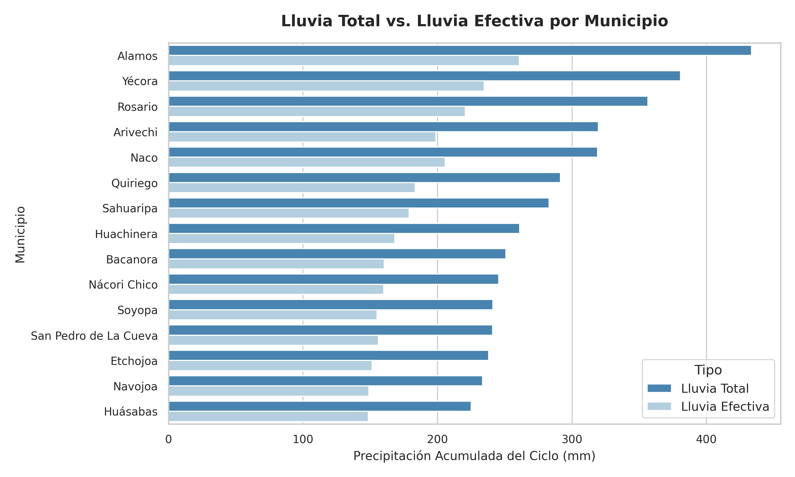
El análisis revela que en municipios serranos y del sur (Álamos, Yécora, Quiriego), a pesar de registrar precipitaciones totales considerables por el monzón, la lluvia efectiva es proporcionalmente baja. El relieve montañoso y la falta de cobertura vegetal provocan escurrimientos rápidos e inundaciones torrenciales que no recargan el suelo agrícola. Esto justifica que la planificación agrícola en la sierra no deba sobreestimar la lluvia total, requiriendo prácticas de labranza de conservación y obras de retención de agua en parcelas.
4. Distribución de Días de Lluvia Significativa en el Ciclo
Muestra el número promedio de días en los que se registran precipitaciones iguales o mayores a 1 mm y 5 mm, permitiendo contrastar lluvias de distribución constante contra eventos aislados y torrenciales del monzón.
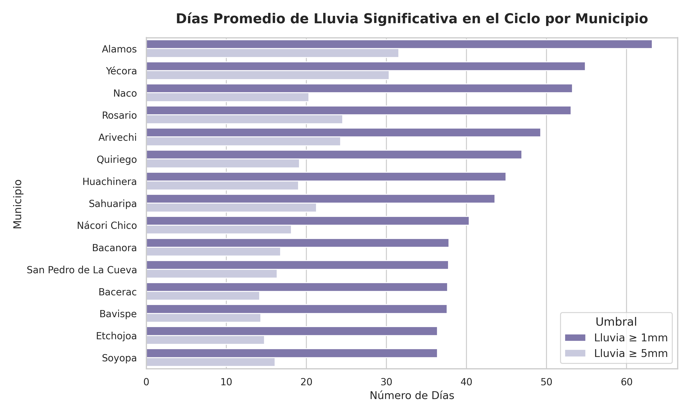
La mayoría de los municipios registran menos de 15 días de lluvia significativa (\(\ge 5\) mm) en todo el ciclo. El agua pluvial cae en eventos muy concentrados, dejando largos periodos intermedios sin humedad en el suelo. Esto confirma la fragilidad pluvial del estado: los cultivos pluviales tradicionales sufren estrés crónico intermedio, sustentando la necesidad de reconvertir hacia cultivos tolerantes a sequías intermitentes o introducir sistemas de micro-riego complementario.
5. Impacto por Sequía Acumulada Municipal (ISAG) por Ciclo
Los siguientes mapas vectoriales representan el Índice de Impacto por Sequía Acumulada Georeferenciada (ISAG) clasificado por niveles de vulnerabilidad para los ciclos Primavera-Verano e Otoño-Invierno. Se observa que la distribución del riesgo hídrico varía de forma drástica según la época del año.
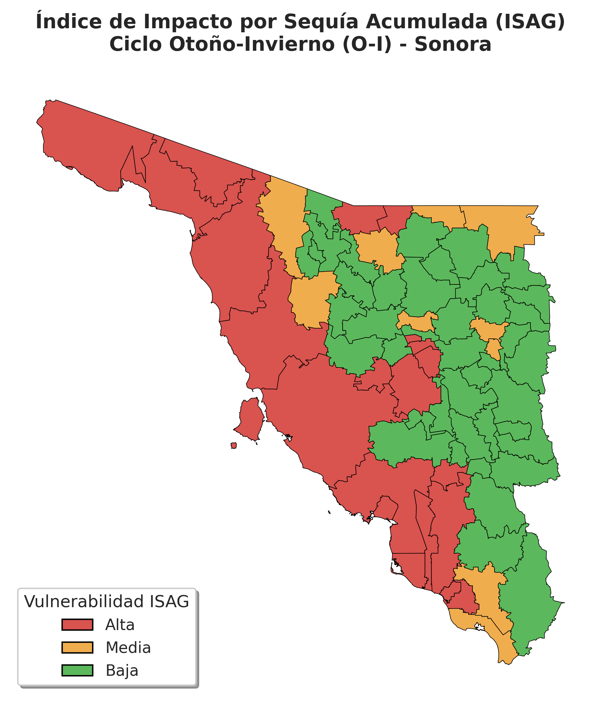
El mapa espacial demuestra que en el ciclo Primavera-Verano, prácticamente todo el territorio presenta una vulnerabilidad extrema alta. Las altas temperaturas veraniegas evaporan el agua del suelo con rapidez. En Otoño-Invierno, la vulnerabilidad disminuye ligeramente en los valles costeros, concentrándose el riesgo en el norte y la zona serrana. Esto justifica que la estrategia de reconversión deba ser estacional: el ciclo Primavera-Verano requiere una sustitución total e inmediata de cultivos de alta demanda por forrajes rústicos (sorgo, garbanzo) o la suspensión selectiva de siembras.
6. Estrés Agroclimático por Temperaturas Extremas
Muestra el promedio anual de días por ciclo en que el cultivo sufre estrés por temperaturas máximas extremas (calor superior a los límites fisiológicos) o temperaturas mínimas (riesgo físico de helada perjudicial).
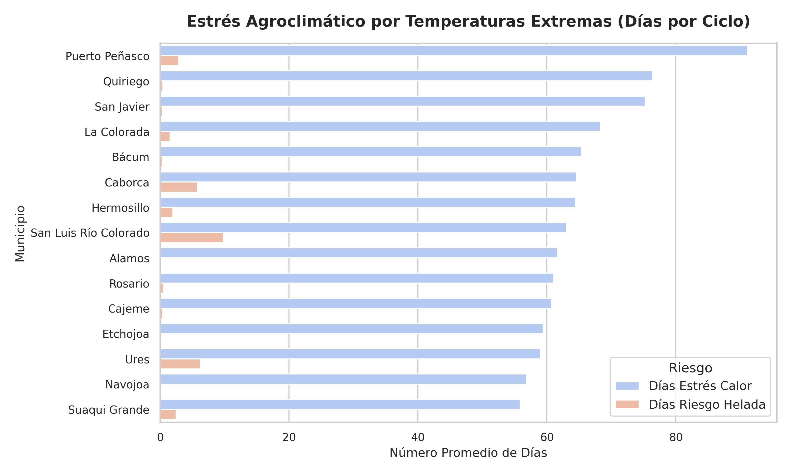
Sonora presenta una segmentación térmica muy marcada: los municipios de la sierra registran un alto número de días con riesgo de heladas, limitando el cultivo de perennes sensibles, mientras que las planicies costeras experimentan más de 90 días de calor extremo. Este calor excesivo provoca el aborto de floración en hortalizas y aumenta la demanda de agua de transpiración. La reconversión productiva debe cruzar estos umbrales térmicos para evitar establecer cultivos que sufran estrés destructivo en su etapa crítica de desarrollo.
7. Distribución Espacial de Temperaturas por Municipio
Zonificación geográfica de las temperaturas media, máxima y mínima registradas durante los ciclos productivos en el estado, sirviendo como mapa base para seleccionar cultivos viables según sus requerimientos térmicos:
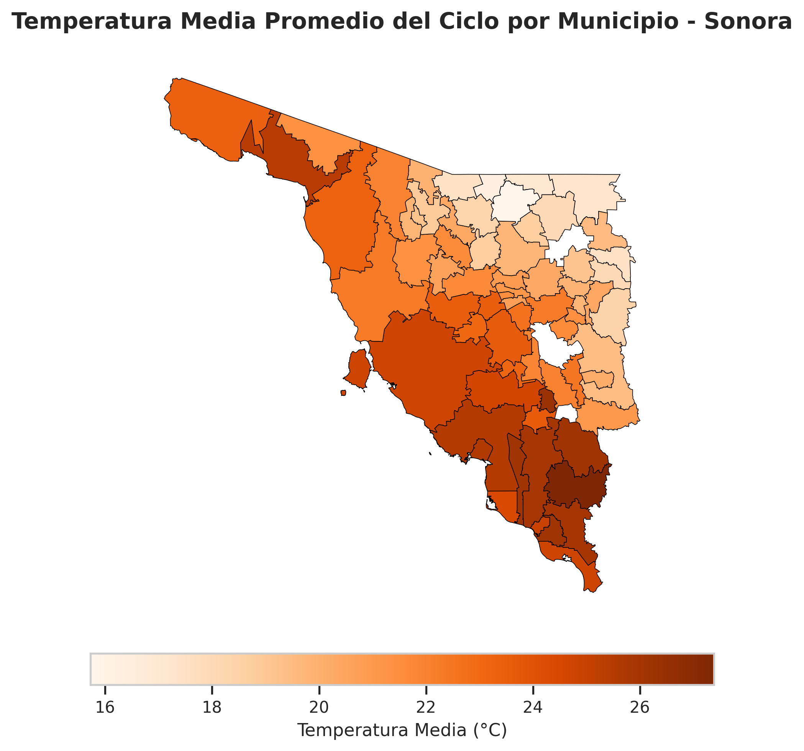
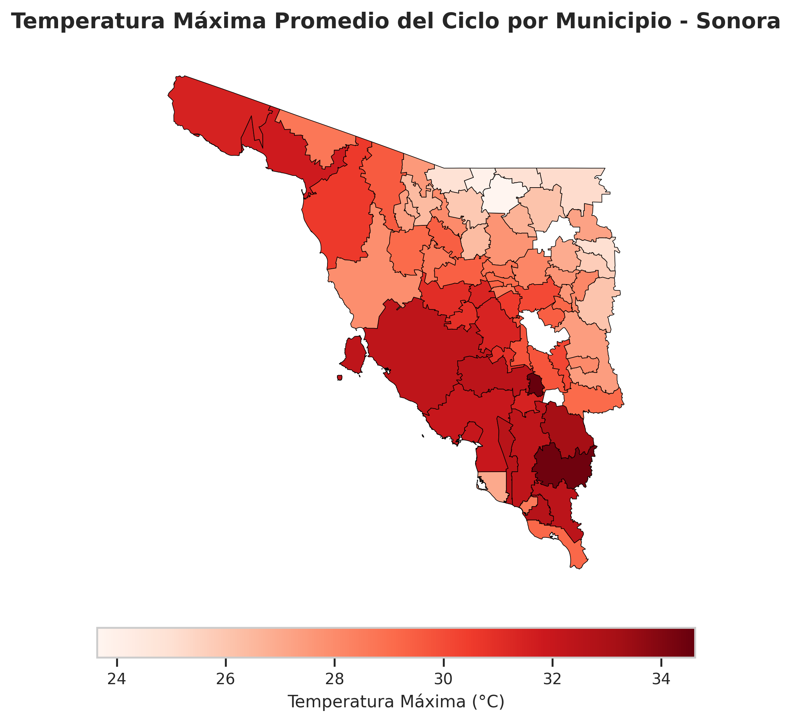
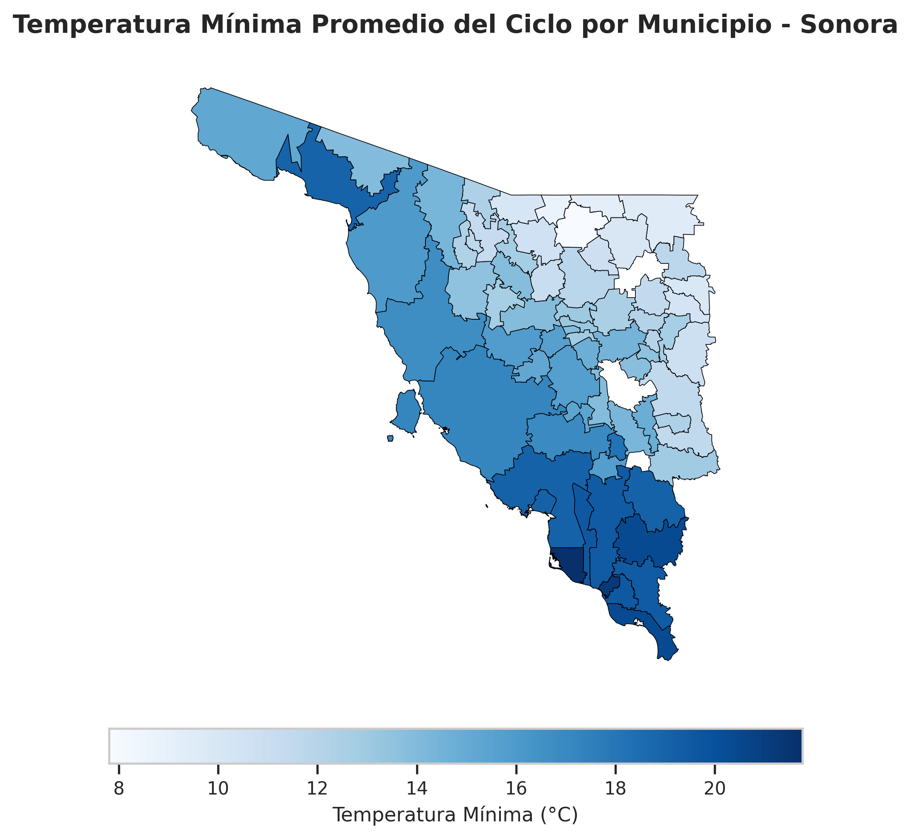
Los mapas cartográficos reflejan que la llanura costera del Golfo y el desierto del noroeste son áreas de acumulación de calor extremo, ideales para cultivos de alta termotolerancia (como dátil o sorgo) pero inviables para especies templadas. Al contrario, las zonas serranas altas del noreste concentran inviernos fríos idóneos para frutales que requieren acumular horas-frío. Esta zonificación orienta geográficamente el destino de cada propuesta de reconversión.
8. Láminas de Riego y Capacidades por Cultivo (Manual INIFAP/FIRA)
Los requerimientos de agua teóricos para los principales cultivos en Sonora muestran la gran brecha de consumo entre los cultivos agrícolas tradicionales y las alternativas recomendadas:
| Cultivo | Tipo | Lámina de Riego (mm) | Duración (Días) | Rendimiento Promedio (Ton/Ha) |
|---|---|---|---|---|
| Alfalfa | Forraje (Perenne) | 1,650 mm | 365 | 15.0 |
| Nogal Pecanero | Frutal (Perenne) | 1,350 mm | 365 | 2.1 |
| Dátil | Frutal (Perenne) | 1,850 mm | 365 | 8.5 |
| Maíz Grano | Grano | 800 mm | 150 | 10.5 |
| Trigo Grano | Grano | 650 mm | 160 | 6.5 |
| Tomate Rojo | Hortaliza | 725 mm | 140 | 80.0 |
| Garbanzo Grano | Leguminosa | 375 mm | 150 | 2.3 |
Se hace evidente que cultivos perennes como la alfalfa (1,650 mm) o el dátil (1,850 mm) ejercen una presión hídrica continua los 365 días del año. Los granos tradicionales como maíz y trigo demandan láminas considerables de 650 a 800 mm por ciclo de 150 días. En contraste, cultivos de bajo requerimiento como el garbanzo (375 mm) y ciertas hortalizas representan alternativas idóneas de bajo consumo hídrico por ciclo agrícola.
9. Balance de Déficit Hídrico Climatológico por Municipio
El déficit hídrico climatológico (\(ET_o - P_{ef}\)) representa la diferencia física entre lo que el ambiente evapotranspira y lo que la lluvia aporta de manera efectiva al suelo, determinando la necesidad real de riego suplementario.
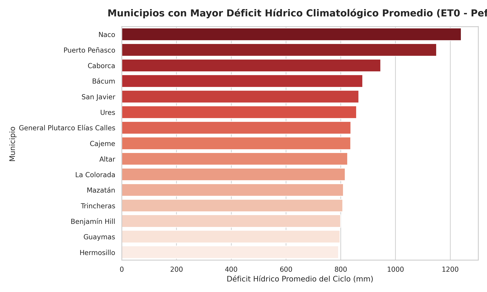
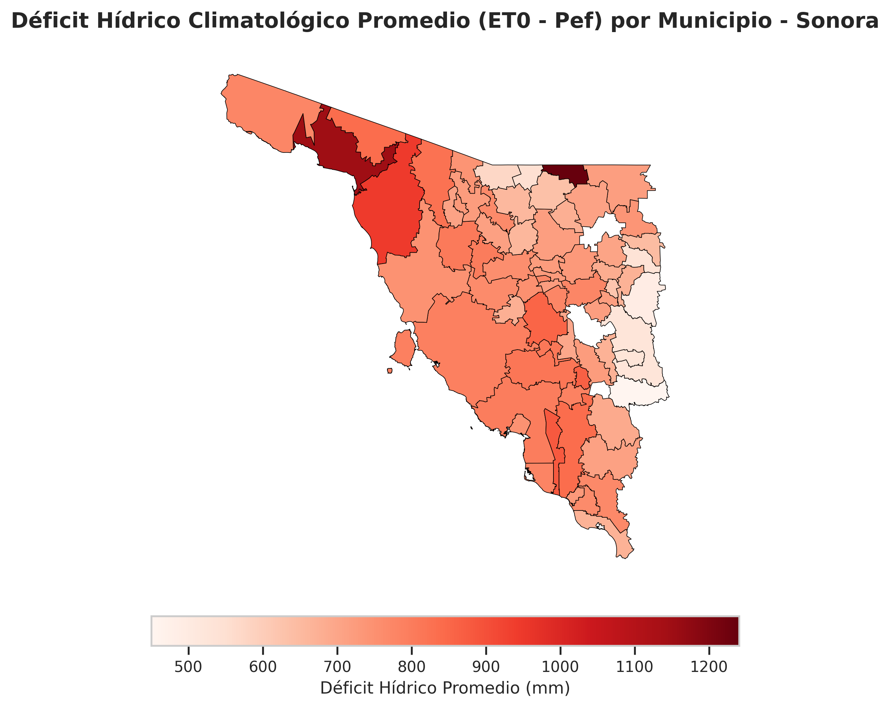
El municipio de Naco registra el mayor déficit climatológico anual acumulado con 1,240.24 mm, seguido de cerca por Arizpe y Bacoachi. Hermosillo y Cajeme también presentan cifras sumamente altas. En estos territorios, cualquier cultivo establecido requerirá bombear volúmenes masivos de agua subterránea o superficial para sobrevivir, elevando drásticamente los costos operativos por energía y acelerando la sobreexplotación de los recursos locales. Esto hace de la reconversión a bajas láminas una necesidad económica y ambiental urgente.
10. Dependencia de Riego vs. Lluvia (Fracción Azul vs. Verde)
Este análisis calcula la porción de agua evapotranspirada por la actividad agrícola que proviene directamente del riego de presas y pozos (agua azul) contra el agua que provee la lluvia efectiva en el suelo (agua verde).
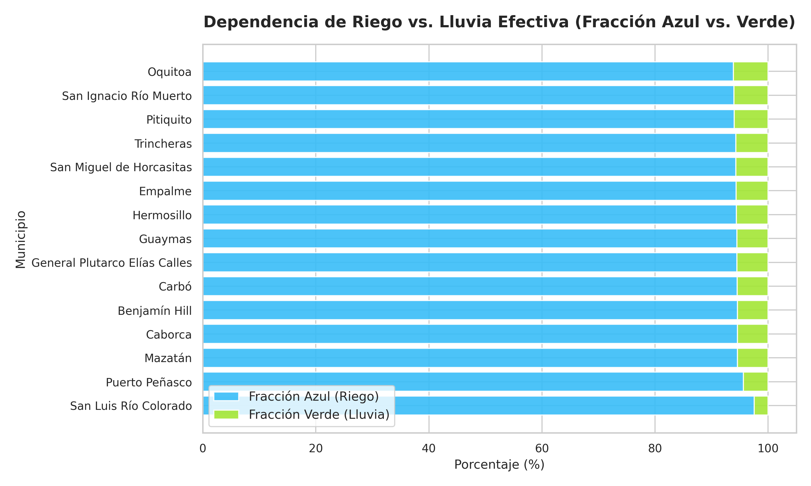
La fracción de agua azul supera el 90% en la mayor parte del estado, confirmando que la viabilidad de la agricultura sonorense está ligada casi en su totalidad al uso eficiente del riego. Este resultado descarta la posibilidad de transicionar hacia una agricultura de temporal en el desierto, y ratifica que la única vía para disminuir la presión hídrica es la reconversión y tecnificación del riego (agua azul) a escala municipal.
11. Presión Hídrica: Demanda por Concesiones Agrícolas (REPNA)
El análisis de los títulos de concesión del Registro Público de Derechos de Agua (REPNA) de la CONAGUA revela la severa presión legal de extracción que ejerce la agricultura comercial sobre las cuencas del estado. El caso más crítico se encuentra en el DDR Hermosillo (Costa de Hermosillo DR-051), el cual concentra títulos de extracción agrícola subterránea que superan los 320 millones de m³/año. Esta demanda física continua, combinada con una recurrencia de sequía de 16.8% en dicho distrito, ha provocado una severa sobreexplotación del acuífero con problemas severos de intrusión salina. Esto demuestra la necesidad de aplicar programas urgentes de reconversión hacia cultivos de bajo consumo para rescatar y estabilizar el acuífero costero.
12. Balance de Volumen de Riego por Distrito de Riego (CONAGUA)
Serie histórica (1998-2024) del volumen bruto de agua utilizado para riego en los cinco Distritos de Riego (DR) de Sonora. Este análisis cuantitativo dimensiona la demanda real y física de agua que la agricultura ejerce sobre las presas y acuíferos del estado.
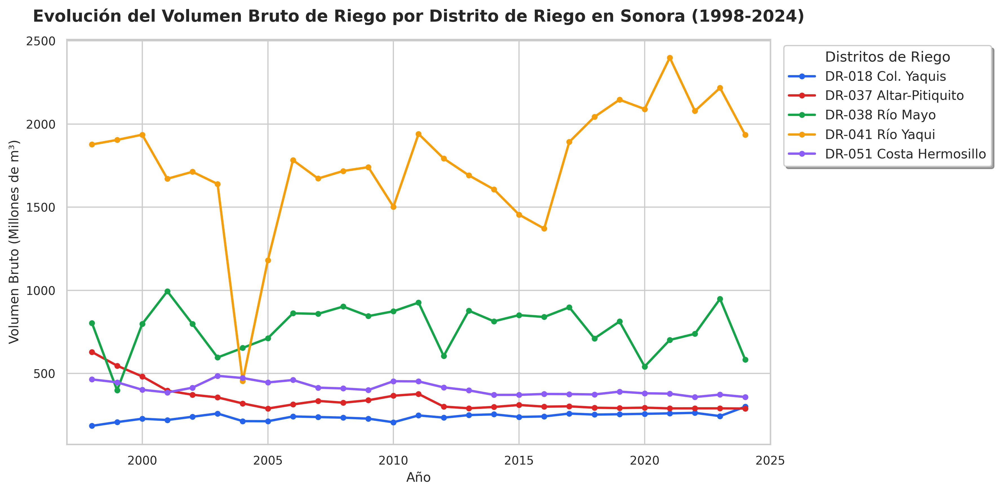
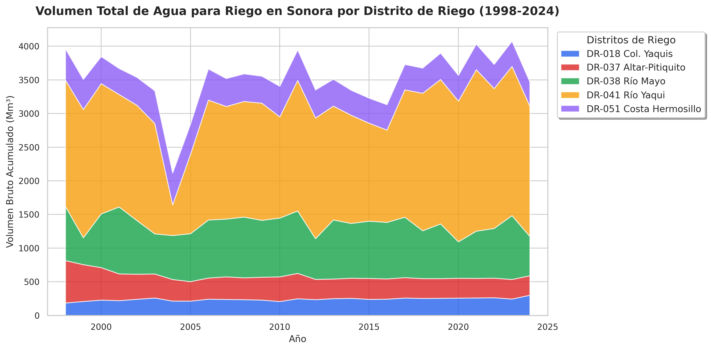
El DR-041 Río Yaqui domina el consumo hídrico estatal con volúmenes que oscilan entre 455 y 2,400 Mm³/año, reflejando su dependencia directa de las presas superficiales de la cuenca del Yaqui. En años secos, como en 2004, el abasto del Yaqui colapsó a solo 454 Mm³, reduciendo drásticamente las siembras de trigo y maíz. En contraste, el DR-051 Costa de Hermosillo mantiene una extracción estable (~350-500 Mm³/año) extraída al 100% de pozos, lo que representa una presión constante e independiente del clima que acelera la sobreexplotación del acuífero. En conjunto, los distritos desvían entre 2,000 y 4,500 Mm³ de agua anuales; una reducción de apenas el 10% mediante reconversión liberaría enormes volúmenes para conservación y consumo humano municipal.
13. Índice Compuesto de Vulnerabilidad Hídrica Municipal (IVH)
Para integrar los 12 indicadores anteriores en una herramienta de planificación para SAGARPA y el Gobierno de Sonora, se calculó un índice compuesto normalizado [0, 1] que pondera los diferentes factores de riesgo:
| Componente | Peso | Fuente |
|---|---|---|
| Déficit Hídrico (ET₀ − Pef) | 0.35 | NASA POWER |
| Vulnerabilidad ISAG | 0.20 | MSM / SMN |
| Dependencia de Riego (frac. azul) | 0.35 | Modelo HH |
| Estrés Térmico (calor + helada) | 0.10 | NASA POWER |
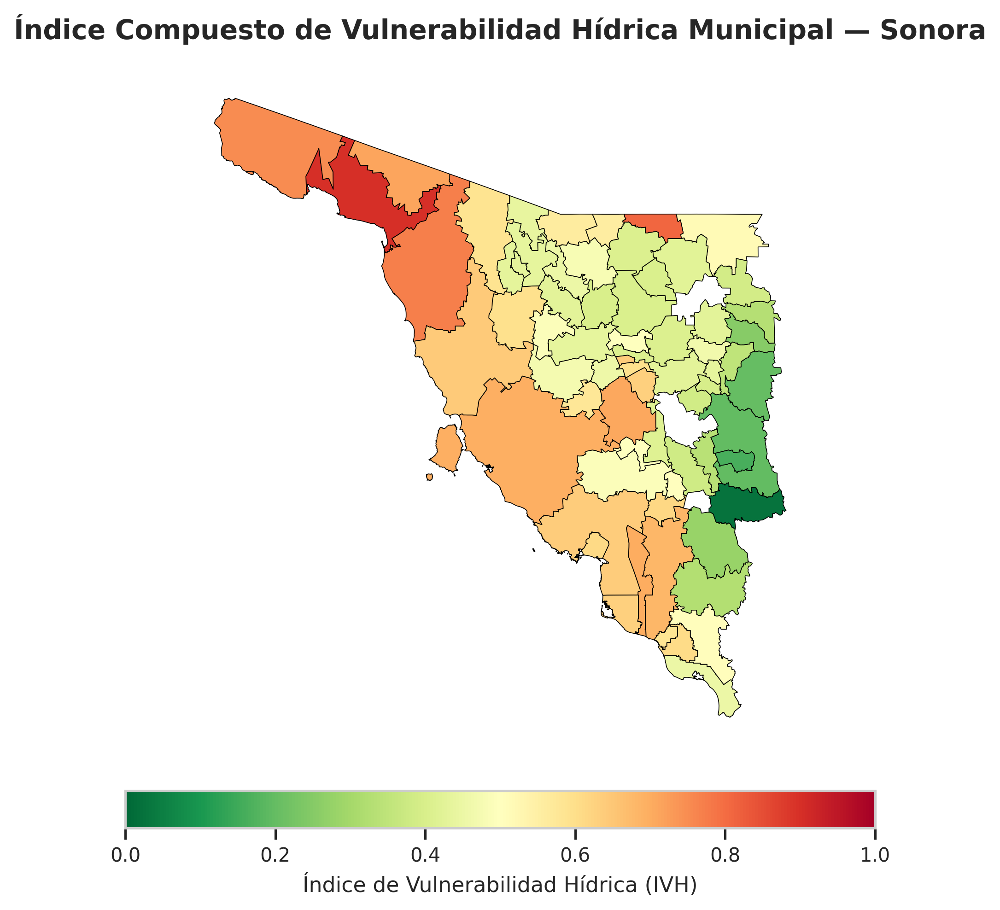
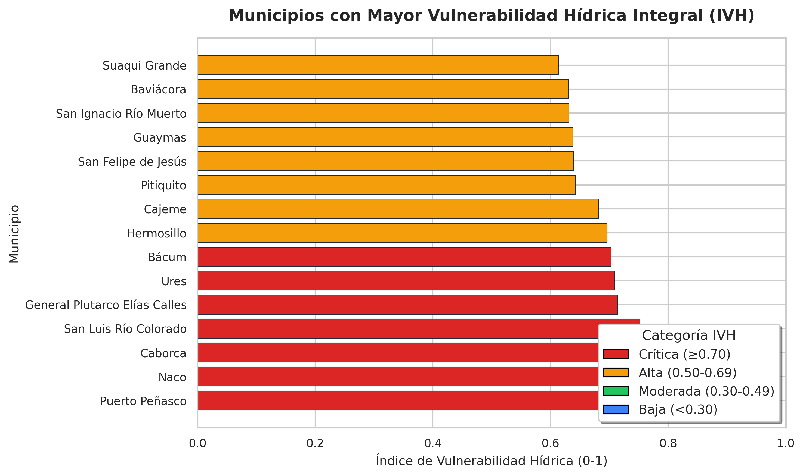
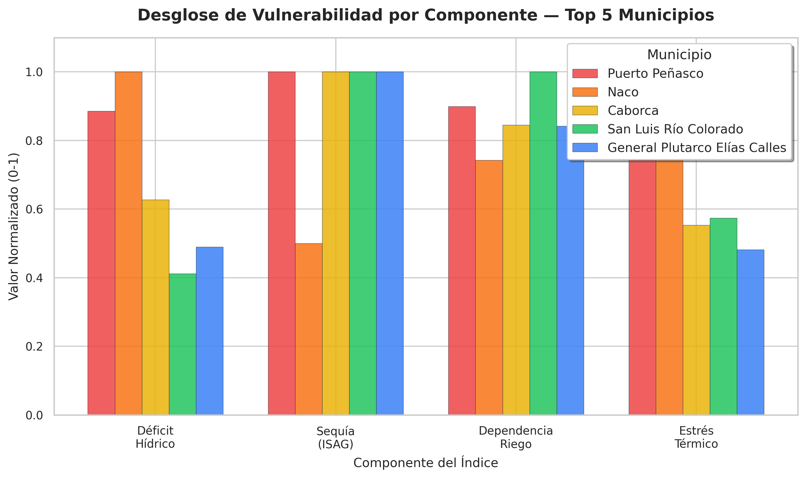
El desglose por componente revela la causa raíz de la vulnerabilidad, permitiendo diseñar intervenciones localizadas a la medida. Por ejemplo, en San Luis Río Colorado el riesgo se debe en su totalidad al déficit hídrico del clima desértico, requiriendo cultivos extremadamente rústicos. En Hermosillo la vulnerabilidad está dictada principalmente por la dependencia extrema de riego (fracción azul) sobre un acuífero explotado, lo que exige tecnificación y reconversión hortícola rápida para reducir los bombeos.
- ● Crítica (IVH ≥ 0.70): Municipios prioritarios para reconversión productiva inmediata (San Luis Río Colorado, Puerto Peñasco, Plutarco Elías Calles, Hermosillo, Caborca).
- ● Alta (0.50 ≤ IVH < 0.70): Zonas de intervención prioritaria y tecnificación intensiva (Cajeme, Guaymas, Empalme, Navojoa).
- ● Moderada (0.30 ≤ IVH < 0.50): Riesgo intermedio manejable con rotación y diversificación de cultivos.
- ● Baja (IVH < 0.30): Municipios serranos estables, aptos para conservación ecológica y forrajes de temporal.
Inventario de Datos de Sonora
Estructura y detalle de los conjuntos de datos recopilados (Crudos, Procesados y Configuración) utilizados para el análisis de reconversión.
Datos Crudos (data/raw/)
Datos Procesados (data/processed/)
Arquitectura de la Librería `seminario_ia`
Detalle de la jerarquía de directorios del paquete de software desarrollado, sus clases, validaciones con Pydantic y lógica de cálculos.
Modelos de Datos con Pydantic
Se implementan modelos estructurados con validación estricta de tipos para asegurar la consistencia de los datos geográficos e hídricos:
Clase Crop (data_models.py)
Representa las características técnicas y calendarios fenológicos de un cultivo individual:
class Crop(BaseModel):
model_config = ConfigDict(extra="ignore")
name: str # Nombre del cultivo (e.g. "Trigo grano")
start_month: int # Mes de inicio del calendario de siembra
start_day: int # Día de inicio del calendario de siembra
end_month: int # Mes de término (cosecha)
end_day: int # Día de término (cosecha)
kc_ini: float # Coeficiente Kc de etapa inicial
kc_mid: float # Coeficiente Kc de etapa media
kc_end: float # Coeficiente Kc de etapa final
durations: tuple[int, int, int, int] # Duración por etapas en díasClase Region (data_models.py)
Representa un área geográfica (municipio) y contiene sus coordenadas, altitud y los cultivos activos cargados dinámicamente:
class Region(BaseModel):
model_config = ConfigDict(extra="ignore")
name: str # Nombre de la región (municipio)
latitude: float # Latitud en grados decimales
longitude: float # Longitud en grados decimales
altitude: float # Altitud en metros sobre el nivel del mar
crops: list[Crop] = [] # Lista de cultivos asociados a la región
def add_crop(self, crop: Crop) -> None:
"""Agrega un cultivo a la región geográfica."""
self.crops.append(crop)
Algoritmos de Cálculo y Fórmulas en Python (eto.py)
Las ecuaciones del estándar FAO-56 se implementan de forma modular
dentro de la librería en el archivo
src/seminario_ia/utils/eto.py. A continuación se
detallan los bloques algorítmicos principales de cálculo diario:
Evapotranspiración de Referencia ($E T_o$ - Penman-Monteith)
El cálculo principal diario de la evapotranspiración de referencia, integrando todas las derivaciones de radiación neta de onda corta y larga y las constantes psicrométricas:
def eto_fao56_mm(
tmax, tmin, rh_pct, u2_ms, rs_mjm2d, lat_deg, z_m, doy, g_mjm2d: float = 0.0
):
"""
ETo [mm/día] — FAO-56 Penman-Monteith (Eq. 6) diario (G=0 por defecto).
Usa es, ea (de T y HR), delta(Tmean), gamma(z) y Rn = Rns - Rnl (Rnl FAO-56 Eq. 39)
"""
tmean = (tmax + tmin) / 2.0
es = (es_kpa(tmax) + es_kpa(tmin)) / 2.0
ea = es * (rh_pct / 100.0)
delta = delta_kpa_per_c(tmean)
p = atm_pressure_kpa(z_m)
gamma = psychrometric_constant_kpa_per_c(p)
rso = extraterrestrial_radiation_mj_m2d(lat_deg, doy)
rns = net_shortwave_rns(rs_mjm2d=rs_mjm2d, albedo=ALBEDO)
rnl = net_longwave_rnl_fao56(tmax, tmin, ea, rs_mjm2d, rso)
rn = rns - rnl
num = 0.408 * delta * (rn - g_mjm2d) + gamma * (900.0 / (tmean + 273.0)) * u2_ms * (es - ea)
den = delta + gamma * (1.0 + 0.34 * u2_ms)
eto = max(0.0, num / den)
return {
"Tmean_": tmean, "es_": es, "ea_": ea, "delta_": delta, "P_": p, "gamma_": gamma,
"Rso_": rso, "Rns_": rns, "Rnl_": rnl, "Rn_": rn, "ET0": eto
}Construcción de la Curva Diaria de Coeficiente de Cultivo ($K_c$)
Calcula los coeficientes diarios correspondientes a las fases vegetativas del cultivo:
def daily_kc_curve(
fechas_idx: pd.DatetimeIndex,
kc_ini: float,
kc_mid: float,
kc_end: float,
dur, # (d_ini, d_des, d_mid, d_fin)
) -> pd.Series:
"""
Calcula la curva de Kc diaria asignando valores constantes por etapa fenológica.
"""
d_ini, d_des, d_mid, d_fin = dur
n = len(fechas_idx)
kc_ini_arr = np.full(d_ini, kc_ini)
kc_des_arr = np.full(d_des, kc_mid)
kc_mid_arr = np.full(d_mid, kc_mid)
kc_fin_arr = np.full(d_fin, kc_end)
kc_full = np.concatenate([kc_ini_arr, kc_des_arr, kc_mid_arr, kc_fin_arr])
if len(kc_full) >= n:
kc_full = kc_full[:n]
else:
kc_full = np.concatenate([kc_full, np.full(n - len(kc_full), kc_end)])
return pd.Series(kc_full, index=fechas_idx, name="Kc_")Precipitación Efectiva ($P_"ef"$) y Huella Hídrica Total
Módulos para estimar la fracción pluvial aprovechada en parcela y los componentes azul y verde de la huella hídrica:
def pef_simple_fao_per_day(ptot_series_mm: pd.Series) -> pd.Series:
"""Calcula Pef aplicando un factor (0.8 o 0.6) según el volumen de lluvia del ciclo."""
ptotal = ptot_series_mm.fillna(0).sum()
f = 0.8 if ptotal < 250.0 else 0.6
return ptot_series_mm.fillna(0) * f
def calculate_wf_uac(
green_et_series_mm: pd.Series,
blue_et_series_mm: pd.Series,
performance_ton_ha: float,
) -> dict:
"""Calcula Consumo Unitario de Agua (UAC en m³/Ha) y Huella Hídrica (HH en m³/Ton)."""
total_green_et_mm = float(pd.Series(green_et_series_mm).fillna(0).sum())
total_blue_et_mm = float(pd.Series(blue_et_series_mm).fillna(0).sum())
green_uac_m3_ha = total_green_et_mm * 10.0
blue_uac_m3_ha = total_blue_et_mm * 10.0
if (performance_ton_ha is not None) and (performance_ton_ha > 0):
green_wf_m3_ton = green_uac_m3_ha / performance_ton_ha
blue_wf_m3_ton = blue_uac_m3_ha / performance_ton_ha
else:
green_wf_m3_ton = float("nan")
blue_wf_m3_ton = float("nan")
return {
"ETverde_total_mm": total_green_et_mm,
"ETazul_total_mm": total_blue_et_mm,
"UACverde_m3_ha": green_uac_m3_ha,
"UACazul_m3_ha": blue_uac_m3_ha,
"HHverde_m3_ton": green_wf_m3_ton,
"HHazul_m3_ton": blue_wf_m3_ton,
}Funciones Auxiliares y Termodinámicas de Soporte
Para resolver variables físicas intermedias como presiones de vapor, radiación de cielo despejado y declinación solar, se implementan las siguientes funciones auxiliares basadas en las guías técnicas de la FAO:
def atm_pressure_kpa(z_m: float) -> float:
"""Calcula la presión atmosférica (kPa) a partir de la altitud (m) (Eq. 7)."""
return 101.3 * ((293.0 - 0.0065 * z_m) / 293.0) ** 5.26
def psychrometric_constant_kpa_per_c(p_kpa: float) -> float:
"""Calcula la constante psicrométrica (kPa/°C) a partir de la presión (Eq. 8)."""
cl, cp, epsilon = 2.45, 1.013e-3, 0.622
return (cp * p_kpa) / (epsilon * cl)
def delta_kpa_per_c(t_c: float) -> float:
"""Calcula la pendiente de la curva de saturación (kPa/°C) (Eq. 13)."""
e = es_kpa(t_c)
return 4098.0 * e / ((t_c + 237.3) ** 2)
def es_kpa(t_c: float) -> float:
"""Calcula la presión de vapor de saturación (kPa) usando la fórmula de Tetens (Eq. 11)."""
return 0.6108 * math.exp((17.27 * t_c) / (t_c + 237.3))
def extraterrestrial_radiation_mj_m2d(lat_deg: float, doy: int) -> float:
"""Calcula la radiación extraterrestre (Ra) en MJ/m²/día (Eqs. 21–25)."""
phi = math.radians(lat_deg)
dr = 1.0 + 0.033 * math.cos(2.0 * math.pi / 365.0 * doy)
delta = 0.409 * math.sin(2.0 * math.pi / 365.0 * doy - 1.39)
ws = math.acos(-math.tan(phi) * math.tan(delta))
return (24.0 * 60.0 / math.pi) * GSC * dr * (
ws * math.sin(phi) * math.sin(delta) + math.cos(phi) * math.cos(delta) * math.sin(ws)
)
def net_shortwave_rns(rs_mjm2d: float, albedo: float = ALBEDO) -> float:
"""Calcula la radiación neta de onda corta (Rns) (Eq. 38)."""
return (1.0 - albedo) * rs_mjm2d
def clear_sky_radiation_rso_fao56(lat_deg: float, doy: int, z_m: float) -> float:
"""Calcula la radiación de cielo despejado (Rso) (Eq. 37)."""
ra = extraterrestrial_radiation_mj_m2d(lat_deg, doy)
return (0.75 + 2e-5 * z_m) * ra
def net_longwave_rnl_fao56(
tmax_c: float, tmin_c: float, ea_kpa: float, rs_mjm2d: float, rso_mjm2d: float
) -> float:
"""Calcula la radiación neta de onda larga (Rnl) según el estándar de la FAO-56 (Eq. 39)."""
tmaxk, tmink = tmax_c + 273.16, tmin_c + 273.16
t4 = (tmaxk**4 + tmink**4) / 2.0
rsrso = 0.0 if rso_mjm2d <= 0.0 else max(0.0, min(rs_mjm2d / rso_mjm2d, 1.0))
fcloud = 1.35 * rsrso - 0.35
return SIGMA * t4 * (0.34 - 0.14 * math.sqrt(max(ea_kpa, 0.0))) * fcloudEspecificaciones de Cultivos y Condiciones de Contorno
Especificaciones técnicas de los cultivos clave y las condiciones físicas bajo las cuales opera el modelo de simulación de reconversión agrícola en Sonora.
1. Ficha Técnica y Especificaciones de los Cultivos
El modelo de simulación se alimenta de los parámetros fenológicos de la FAO-56 y los requerimientos técnicos oficiales del INIFAP. Los cultivos se dividen en tres categorías principales según su comportamiento y ciclo vegetativo:
Especies de ciclo continuo de 365 días o temporadas de desarrollo extensas con alta demanda acumulada.
Cultivos establecidos en la época fría para aprovechar menores tasas de evapotranspiración de referencia (ETo).
Cultivos de ciclo cálido expuestos a la máxima radiación solar y tasas pico de evapotranspiración.
Parámetros de Entrada del Modelo y su Rol en el Cálculo
Para realizar la simulación física de la evapotranspiración y el posterior modelado de la huella hídrica y reconversión, se utilizan los siguientes parámetros clave:
Definición: El número de días desde la siembra o brote hasta la cosecha.
Rol en el cálculo: Define el rango temporal de integración diaria. La evapotranspiración \( (ET_c) \) y la lluvia efectiva \( (P_{ef}) \) se calculan y acumulan día con día a lo largo de este ciclo específico para determinar el volumen total de agua consumido en el ciclo \( (UAC) \).
Definición: Factor adimensional que relaciona la demanda evapotranspirativa del cultivo con la de un cultivo de referencia (pasto) bajo el mismo clima. Varía en las etapas inicial, media y final.
Rol en el cálculo: Se multiplica por la evapotranspiración de referencia \( (ET_o) \) diaria (Penman-Monteith) para calcular el requerimiento fisiológico diario del cultivo \( (ET_c = K_c \times ET_o) \). Permite capturar la demanda dinámica de agua de la planta a lo largo de su desarrollo.
Definición: El volumen total acumulado de riego recomendado para aplicarse en parcela bajo prácticas de riego tradicionales de la región.
Rol en el cálculo: Sirve como la demanda aplicada de diseño \( (L_{riego}) \). Se contrasta contra la evapotranspiración neta real del modelo para cuantificar la eficiencia de aplicación del riego y estimar los ahorros volumétricos potenciales.
Definición: La productividad de cosecha comercial obtenida por unidad de superficie sembrada.
Rol en el cálculo: Es el denominador en la ecuación de la Huella Hídrica \( (HH = UAC / \text{Rendimiento}) \). Permite transformar la variable física del agua consumida \( (m^3/\text{Ha}) \) en una métrica de productividad física del recurso \( (m^3/\text{Ton}) \), que es la base del análisis de eficiencia.
2. Condiciones de Contorno, REPNA y Tecnificación
El modelado de reconversión productiva no opera en el vacío, sino que está acotado por condiciones físicas meteorológicas, límites legales de concesión y eficiencias de los sistemas de riego:
1. El Cultivo de Referencia de la FAO-56 (Base de \( ET_o \))
La evapotranspiración de referencia \( (ET_o) \) representa el flujo de agua evaporada por un cultivo teórico de referencia. El estándar internacional FAO-56 define este cultivo con características biofísicas fijas:
- Altura Uniforme: Asume una altura fija de \( 0.12 \) metros.
- Albedo: Coeficiente de reflexión de radiación solar fijado en \( 0.23 \).
- Resistencia Superficial: Fijada en \( 70 \) s/m, lo que emula una superficie extensa de pasto verde, activo, denso y adecuadamente provisto de agua.
Al fijar estas variables biológicas, la variabilidad de la \( ET_o \) depende exclusivamente de los factores climáticos. Esto justifica la introducción de los coeficientes de cultivo \( (K_c) \), que actúan como factores de escala para adaptar esta demanda de referencia a la fenología, estructura y necesidades reales de los cultivos en Sonora.
2. Condiciones Físicas y Ambientales (NASA POWER)
Las simulaciones de evapotranspiración de referencia \( (ET_o) \) se realizan a escala diaria para el periodo 2003-2024 utilizando los datos climatológicos de la NASA POWER a nivel de centroide municipal:
- Radiación Solar Global \( (R_s) \): Aporta la energía física necesaria para el proceso de evapotranspiración.
- Humedad Relativa y Viento \( (u_2) \): Regulan el gradiente de presión de vapor y el poder desecante de la atmósfera.
- Temperatura Máxima, Mínima y Media: Regulan el desarrollo fenológico y los umbrales de estrés agroclimático por helada \( (< 0^\circ\text{C}) \) o calor extremo \( (> 40^\circ\text{C}) \).
3. Derechos de Concesión (REPNA) como Límite del Modelo
El Registro Público de Derechos de Agua (REPNA) de CONAGUA actúa como una restricción legal y volumétrica de primer orden:
- Criterio de Restricción: Ninguna propuesta de reconversión de cultivos puede recomendar una demanda agregada de agua de riego que supere el volumen concesionado registrado en el REPNA para el municipio o Distrito de Riego.
- Rol en los cálculos: El volumen total de concesión establece el techo de demanda hídrica permisible. Si un cultivo requiere una lámina que al multiplicarse por la superficie cultivada supera este techo, el modelo descarta la viabilidad de la superficie completa o fuerza la sustitución inmediata por cultivos de bajo consumo.
4. Diagnóstico de la Tecnificación Real en Sonora (SAGARPA/UNISON)
Para calibrar el modelo con la realidad del campo sonorense, se integró el estudio de actualización de la delegación estatal de SAGARPA y la Universidad de Sonora, el cual revela una baja tecnificación generalizada en los distritos:
Promedio Estatal: De las 531,701 hectáreas en operación agrícola en el estado, solo 106,418 hectáreas están tecnificadas, lo que representa apenas el 20.0% de tecnificación general. El 80.0% restante depende de riego por gravedad tradicional con altas tasas de pérdida.
Agricultura Protegida: Se registran únicamente 2,872 hectáreas bajo agricultura protegida (1,370 Ha de invernaderos y 1,501 Ha de malla sombra), de las cuales el 65% se concentran en los distritos de Cajeme y Hermosillo. Esto demuestra que la reconversión productiva debe ir ligada a programas agresivos de tecnificación, sobre todo en los valles del sur (Yaqui y Mayo) que concentran la mayor superficie pero con eficiencias críticas.
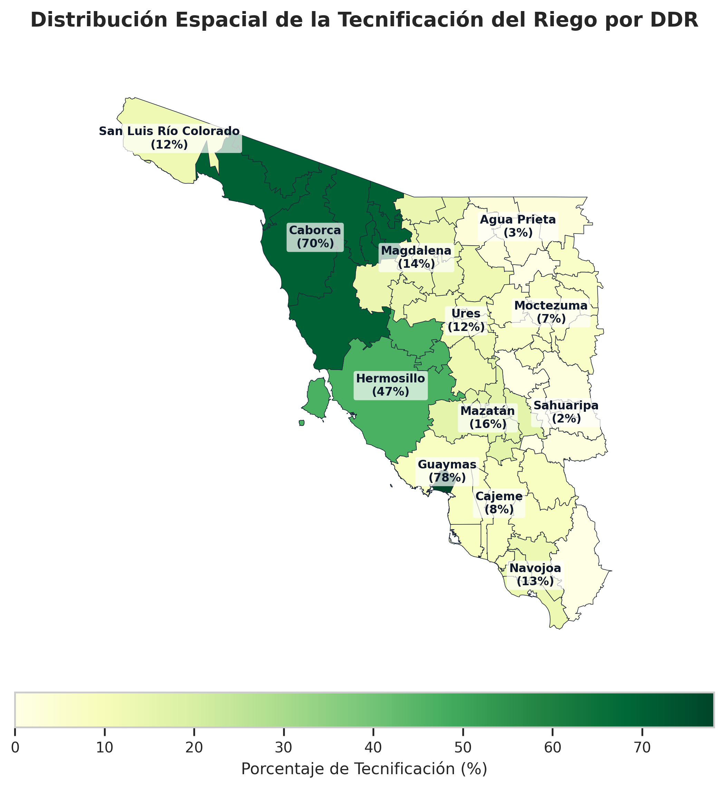
Análisis Estadístico y Eficiencia Hídrica
Resultados del análisis multivariable del agua y rentabilidad en Sonora (periodo 2010-2024).
Dashboard de Recursos Hídricos y Eficiencia Agrícola
Herramienta interactiva para explorar la huella hídrica, rendimiento e impacto de sequías en Sonora. Selecciona el nivel territorial, la región y el cultivo para graficar los datos del pipeline.
{kind=link}
{kind=link}
Definiciones de los términos técnicos y económicos utilizados en esta sección.